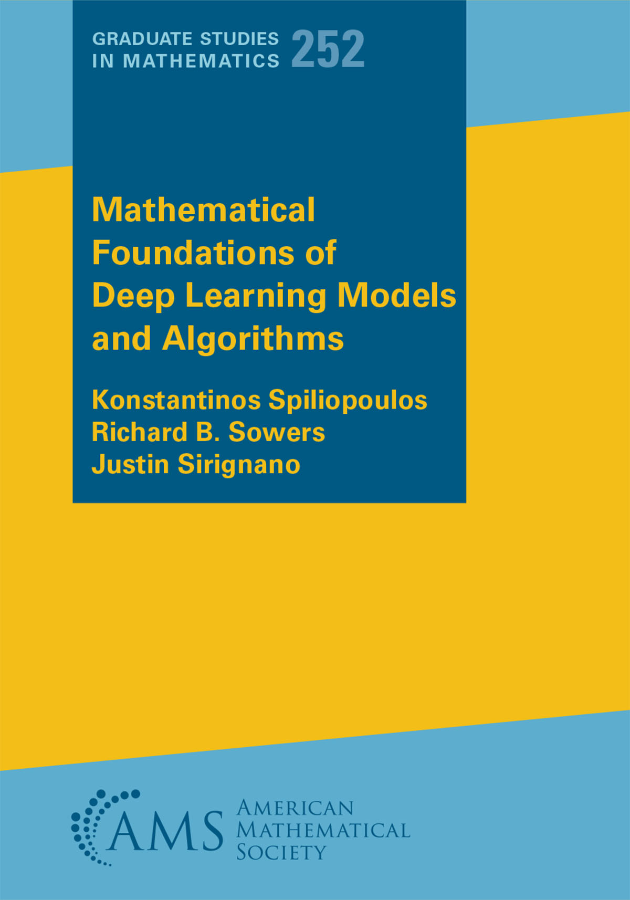

|  |
|
@book{MathDLBook-2025,
title={Mathematical Foundations of Deep Learning Models and Algorithms},
author={Konstantinos Spiliopoulos and Richard Sowers and Justin Sirignano},
publisher={American Mathematical Society},
note={\url{MathDL.github.io}},
year={2025}
}
top